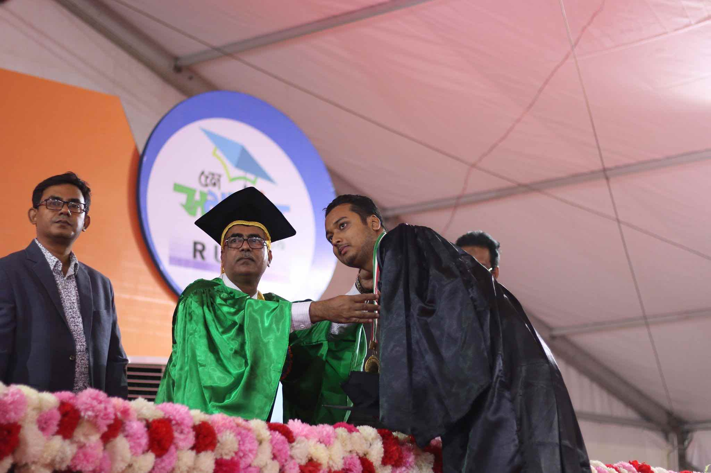
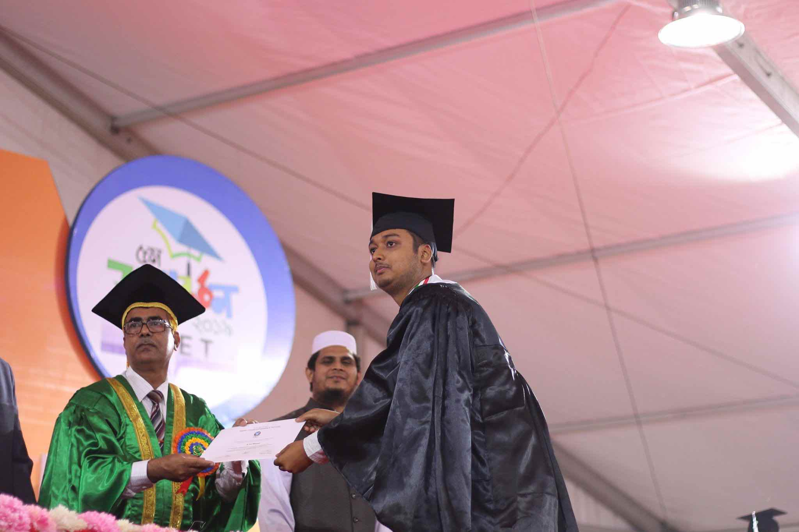
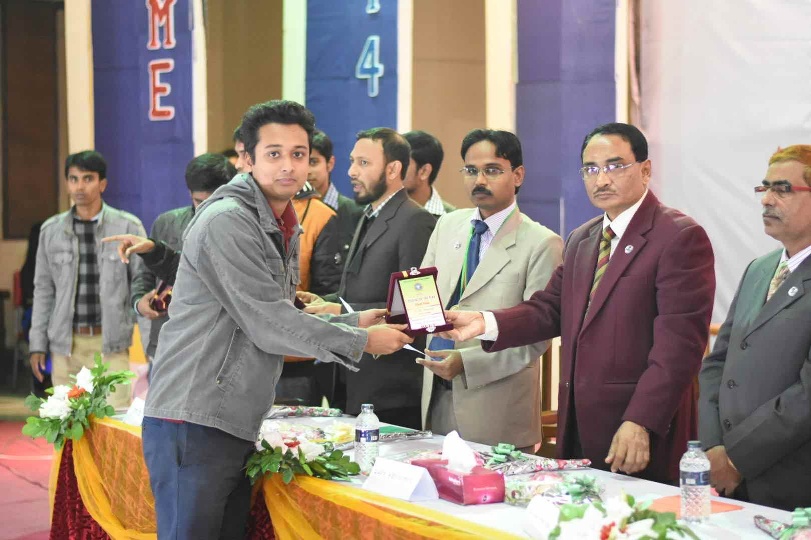
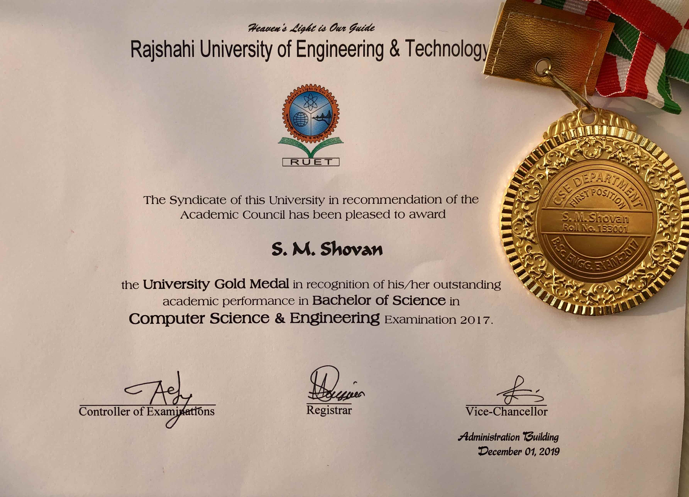
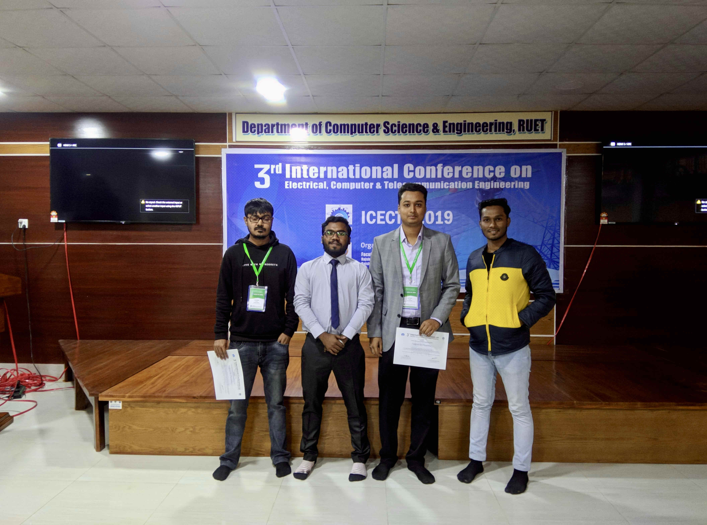
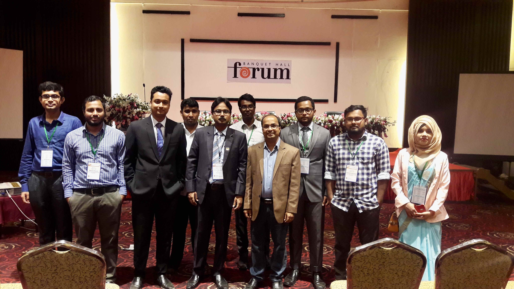
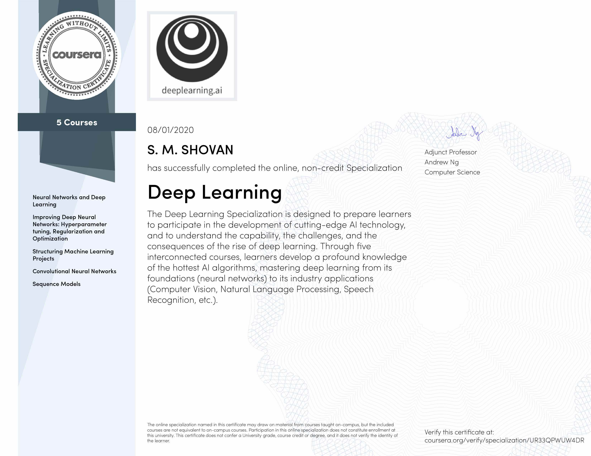
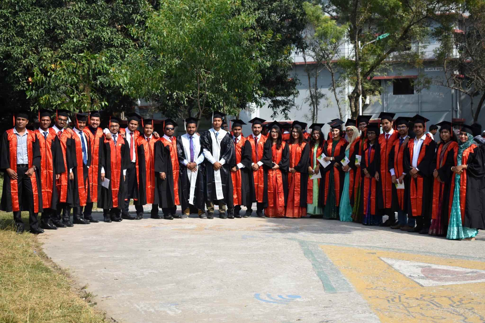
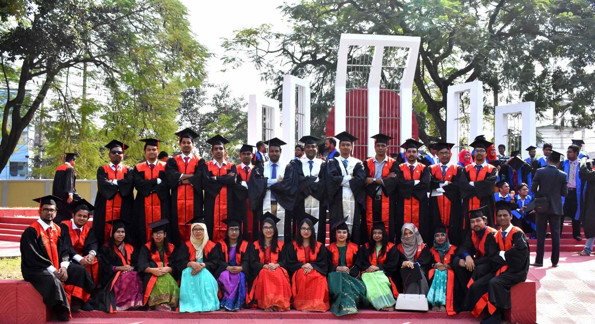

SUMMERY
Research enthusiast with two years of teaching experience. Confident in working on different branches of machine learning, deep learning and artificial intelligence. Goal is to bring new knowledge into the world.
EDUCATION
-
2019-Present M.Sc. in Computer Science & Engineering Rajshahi University of Engineering & Technology (RUET), Bangladesh CGPA: -- / 4.00 Thesis: Post-translational Modification Prediction in Proteins. Supervisor: Dr. Md. Al Mehedi Hasan (Professor) & Dr. Md. Rabiul Islam (Professor)
2014-2018 B.Sc. in Computer Science & Engineering Rajshahi University of Engineering & Technology (RUET), Bangladesh CGPA: 3.96/ 4.00, First Class with Honors (First Merit Position) Thesis: Prediction of Lysine Glycation PTM site in Protein using Peptide Sequence Evolution based Features, 2017-18 Supervisor: Dr. Md. Al Mehedi Hasan (Professor)
2012-2013 Higher School Certificate Mahmudul Hasan Adarsha College, Tangail, Bangladesh GPA: 5.00/ 5.00
2010-2011 Secondary School Certificate Bindubashini Govt. Boys' Hight School, Tangail, Bangladesh GPA: 5.00/ 5.00
TEACHING EXPERIENCE
-
November 2019 – Present Lecturer Department of Computer Science & Engineering Rajshahi University of Engineering & Technology (RUET), Bangladesh February 2019 – September 2019 Lecturer Department of Computer Science & Engineering United International University (UIU), Bangladesh
Family Background
| Father | S.M. Afaz Uddin |
| Freedom Fighter | |
| Retired Additional Director, Agricultural Department | |
| Mother | Kh. Maleka Shirin |
| Achiever of Ratnagarva Award | |
| Homemaker | |
| Brother | Dr. S M Sohan, Ph.D, University of Calgary |
| Graduation: Computer Science & Engineering, BUET | |
| Principal Engineering Manager, Microsoft, Canada | |
| Former Manager III, Software Engineering, Cisco, Canada | |
| Sister | Doctor Sumana Shifat |
| MBBS (Mymensingh medical college), FCPS (Obs and Gynae), BCS (Health) | |
| Medical officer,Shaheed Suhrawardy Medical College Hospital, Dhaka. | |
| Sister-in-law | Shahana Bintey Kabir |
| Graduation: Electrical and Electronic Engineering (EEE), BUET | |
| Former Research Associate, University of Calgary | |
| Brother-in-law | Md Abuboker Siddique |
| L.L.B, L.L.M (Chittagong University) | |
| Additonal Chief Metropolitan Magistrate,Dhaka |
RESEARCH INTEREST
- Bioinformatics
- Machine Learning
- Computer Vison
- Natural Language Processing
- Robotics
AWARDS
-
University Gold Medal
Awarded by the President of Bangladesh for holding the first merit position in the departmentBest Student Award
Awarded by the Vice-chancellor of RUET for the excellent academic score
LANGUAGES
-
Bengali Native Language English Fully fluent in English
PUBLICATIONS
-
- M. E. Arafat, M. W. Ahmad, S. M. Shovan, A. Dehzangi, S. R. Dipta, M. A. M. Hasan, G. Taherzadeh, S. Shatabda, and A. Sharma, “Accurately Predicting Glutarylation Sites Using Sequential Bi-Peptide-Based Evolutionary Features,” Genes, vol. 11, no. 9, p. 1023, Aug. 2020, doi: 10.3390/genes11091023.
- S. M. Shovan and M. A. M. Hasan, "Prediction of Lysine Glycation PTM site in Protein using 2019 International Conference on Electrical, Computer and Communication Engineering (ECCE), Cox'sBazar, Bangladesh, 2019, pp. 1-5, doi: 10.1109/ECACE.2019.8679407.
- Husnul Abid, Nusrat Jahan Jenny, S. M. Shovan, "Improved Identification Performance of Lysine Glycation PTM using PSI-BLAST," 2020 IEEE Region 10 Symposium (TENSYMP), Dhaka, Bangladesh, 2020, pp. 18-21, doi: 10.1109/TENSYMP50017.2020.9231035.
- Md Wakil Ahmad, Md Easin Arafat, S. M. Shovan, Mahtab Uddin, Omar Faruq Osama, "Enhanced Prediction of Lysine Propionylation Sites using Bi-peptide Evolutionary Features Resolving Data Imbalance," 2020 IEEE Region 10 Symposium (TENSYMP), Dhaka, Bangladesh, 2020, pp. 1668-1671, doi: 10.1109/TENSYMP50017.2020.9230466.
- S. M. Shovan, M. A. Hasan, and M. R. Islam, “Accurate Prediction of Formylation PTM Site using Multiple Feature Fusion with LightGBM Resolving Data Imbalance Issue,” 2020 23rd International Conference on Computer and Information Technology (ICCIT), 2020.
- S. M. Shovan, M. Al Mehedi Hasan, and M. R. Islam, “Improved Prediction of Glutarylation PTM Site using Evolutionary Features with LightGBM Resolving Data Imbalance Issue,” 2021 International Conference on Information and Communication Technology for Sustainable Development (ICICT4SD), 2021.
- M. R. Islam, A. Matin, M. Nahiduzzaman, M. S. Siddiquee, F. M. Hasnain, S. M. Shovan, and T. Hasan, “A Novel Deep Convolutional Neural Network Model for Detection of Parkinson Disease by Analysing the Spiral Drawing,” Algorithms for Intelligent Systems, pp. 155–165, 2021.
- Tentative title: “iCon-Site: Identifying Concurrent Lysine Modification Sites of Protein with Optimized Features”
- MOST DOMINANT METABOLOMIC BIOMARKERS FOR LUNG CANCER
- Multi-class Cancer Classification and Biomarker Identification from RNA-Seq Gene Expression Data
Journal
Conferences
Work in progress
CERTIFICATIONS
-
2020 Deep Learning Specialization Issuing Organization: Coursera, Credential ID: UR33QPWUW4DR 2020 Emerging Technologies Workshop: Network Programmability with Cisco APIC-EM Issuing Organization: Cisco 2017 Machine Learning Issuing Organization: Coursera, Credential ID: 3X8GA5KEARH9
ACADEMIC PROJECT EXPERIENCE
-
2018 Hardware: Logging Real-time Temperature and Humidity from Environment A temperature and humidity monitoring tool sensed using raspberry Pi and sensors. github.com/SMShovan/temphumpro 2018 Graphics: Eve-teasing Consciousness An OpenGL graphics project created for spreading consciousness in societies. github.com/SMShovan/EveTeasingGraphcisCpp 2017 Web Development: Blood Donation A website for connecting the blood donors and needers. github.com/SMShovan/Blood-Donation-web-project 2016 OOP: A Flag Identification Quiz and Learning App A Java based quiz app developed for learning and testing flags around globe. github.com/SMShovan/Identify-Flags
CONFERENCE ATTENDED
-
June 2020 IEEE Region 10 Symposium (TENSYMP) 2020 Organized by. IEEE Bangladesh Section December 2019 International Conference on Electrical, Computer & Telecommunication Organized by, Faculty of Electrical & Computer Engineering, RUET, Bangladesh February 2019 International Conference on Electrical, Computer and Communication Engineering Organized by, Faculty of Electrical & Computer Engineering, CUET, Bangladesh
COMMUNITY INVOLVEMENT
-
2015 – 2018 Vice President, Tangail Zilla Society, RUET 2016 Volunteered in organizing National High School Programming Contest, RUET.
GALLERTY

Receiving University Gold Medal

Receiving Certification of University Gold Medal

Receiving Best Student Award from Honourable VC of RUET

Certificate and Gold Medal

ICECTE 2019: Conference Participation

ECCE 2019: Conference Participation

Deep Learning Specialization Certification

Convocation

Convocation
REFERENCES
- Md. Al Mehedi Hasan, Professor, Department of Computer Science & Engineering, Rajshahi University of Engineering & Technology, Rajshahi, Bangladesh (Supervisor). Email: mehedi_ru@yahoo.com, Cell: +88-01712205360
- Dr. Md. Rabiul Islam, Professor, Department of Computer Science & Engineering, Rajshahi University of Engineering & Technology, Rajshahi, Bangladesh (Teacher). Email: rabiul_cse@cse.ruet.ac.bd, Cell: +88-0171541 8938
- Dr. A H M Sarowar Sattar, Professor, Department of Computer Science & Engineering, Rajshahi University of Engineering & Technology, Rajshahi, Bangladesh (Teacher), Email: sarowar@cse.ruet.ac.bd, Cell: +88-01761325290
- Swakkhar Shatabda, Associate Professor, Department of Computer Science and Engineering (CSE), United International University (UIU), Dhaka, Bangladesh (Co-author and former colleague). Email: swakkhar@cse.uiu.ac.bd, Cell: +88-01776195310